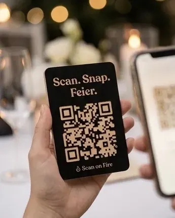
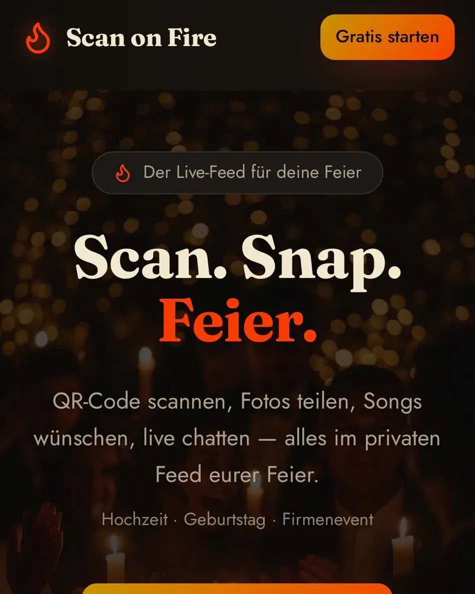
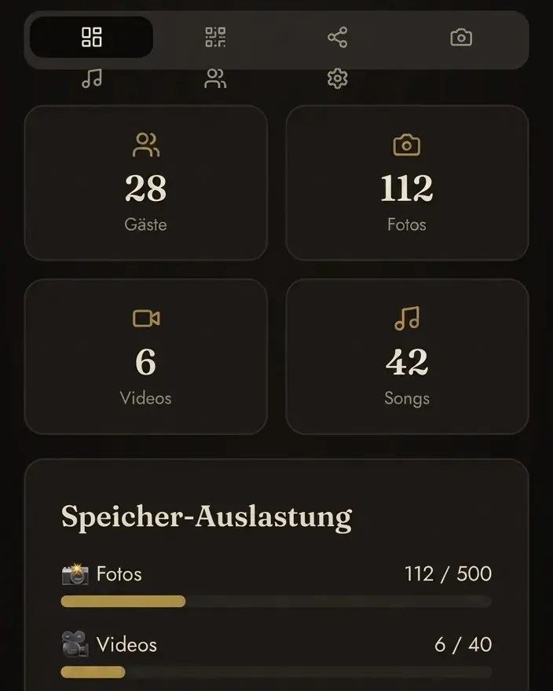
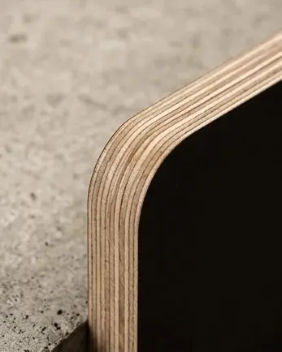
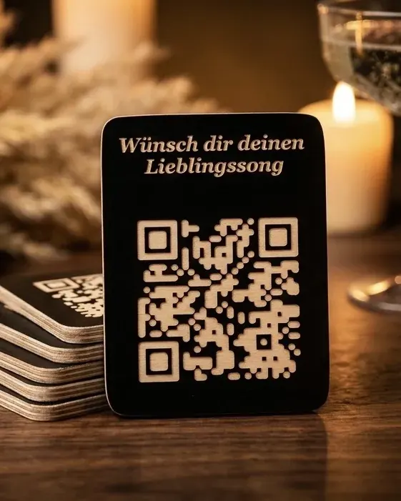

Scan on Fire – QR-Karten aus Holz für deine Feier
Physisches Handwerk trifft digitale Welt: eine CNC-gefräste Karte mit QR-Code, der direkt in einen privaten Live-Feed für eure Veranstaltung führt – Fotos, Songwünsche und Chat, ohne App-Download.
- Ohne App-Download, ohne Login
- App-Nutzung im Preis enthalten

Eine Karte, die mehr kann als ein Gästebuch
Ich fertige individuelle QR-Karten aus Siebdruckplatte – auf Wunsch auch in Eichenholz, lackiertem Multiplex oder einem anderen Material deiner Wahl. Jede Karte wird CNC-gefräst, der QR-Code ist Teil der Gravur, kein aufgeklebter Aufdruck.
Gescannt führt der Code direkt in Scan on Fire, die kostenlose Live-Feed-App, die ich zusätzlich zu WiNKATO entwickelt habe. Eure Gäste landen ohne Umweg in einem geschützten Bereich – ganz ohne App-Download und ohne Login.
Scan. Snap. Feier.
Alles läuft direkt im Browser des Smartphones – kein Download, keine Registrierung.
- Zu- oder absagen
- Fotos & Videos teilen
- Lieblingssongs wünschen
- Live mit anderen Gästen chatten


Den vollen Überblick behalten
Als Gastgeber siehst du jederzeit, wie viele Gäste zugesagt haben und was zusammenkommt – ohne selbst etwas moderieren zu müssen.
Ein integriertes Gäste-Management-System übernimmt Zu- und Absagen, sammelt alle geteilten Fotos und Videos an einem Ort und listet die gewünschten Songs für die Playlist des Abends.
CNC-gefräst, nicht bedruckt
Der QR-Code entsteht durch Fräsung – dadurch bleibt er auch nach Jahren lesbar.


Materialien
- Siebdruckplatte, schwarz (Standard)
- Eichenholz massiv
- Lackiertes Multiplex
- Anderes Material auf Anfrage
QR-Karten für deine Feier
Hochzeit · Geburtstag · Firmenevent
ab 99 €
Je nach Stückzahl und Material
- CNC-gefräster QR-Code, kein Aufdruck
- Nutzung der Scan-on-Fire-App inklusive
- Material nach Wahl
Zu Scan on Fire
Was ist Scan on Fire?
Was können Gäste in der App machen?
Was sehen Veranstalter?
Aus welchem Material werden die QR-Karten gefertigt?
Was kostet eine QR-Karte?
Feier planen?
Erzähl mir von deiner Veranstaltung – Anlass, Gästezahl und gewünschtes Material. Ich melde mich innerhalb von 24 Stunden mit einem Angebot.